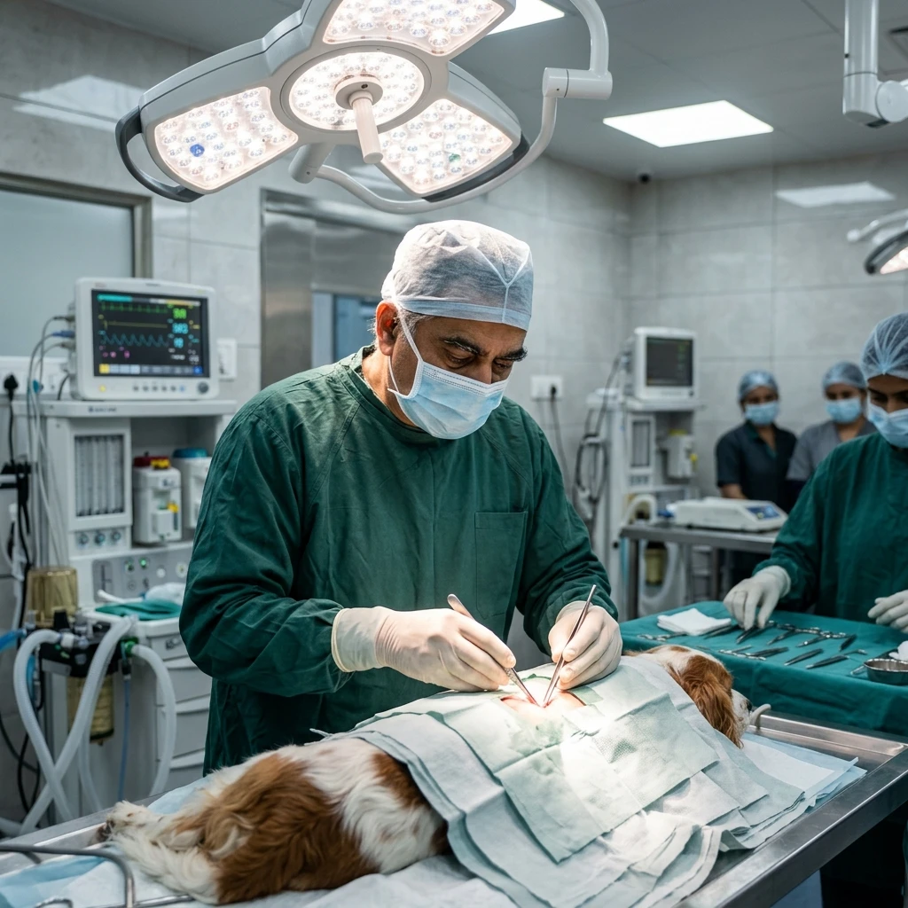
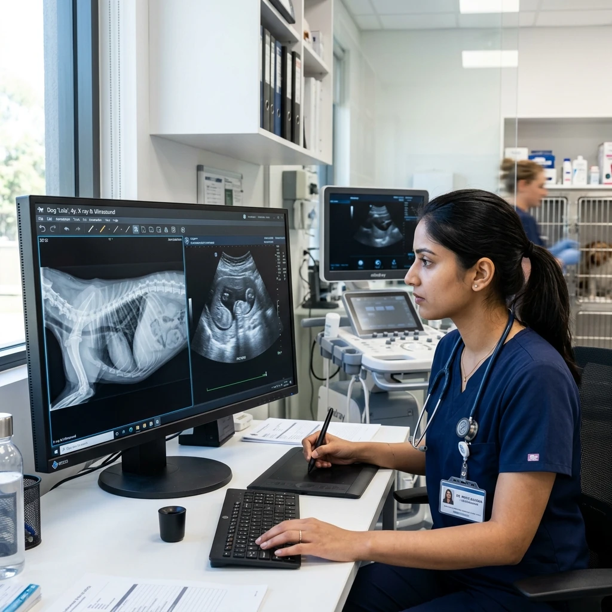

Bridging Theory & Surgical Mastery.
Master soft tissue surgery, digital radiology, emergency ICU triage, and ultrasound through 1-on-1 specialist mentorship in our state-of-the-art Pune clinical campus.
Programs Designed For Every Stage Of Your Veterinary Career
Select your experience level below to explore your personalized clinical progression path, skill milestones, faculty guidance, and career outcome.
Early-Career Vet
1–3 Yrs ExperienceSurgical dexterity & diagnostic triage.
Experienced Vet
5–10 Yrs ExperienceSpecialist surgeries & orthopaedics.
Final-Year BVSc
Student / InternClinical prep & basic procedures.
Fresh Graduate
0–1 Yr ExperienceClinic workflows & case management.
Vet Nurse
Paravet / AssistantVital tracking & OT assistance.
Pet Care Lead
Owner / RescuerFirst aid, CPR & preventive care.
Early-Career Doctor Practical Progression
Step-by-step clinical progression designed to transition 1–3 year veterinarians from theory-heavy academics into self-sufficient surgical and diagnostic clinicians.


Soft Tissue Surgery Masterclass
Master abdominal organ surgeries, spay/neuter protocols, and stitching dexterity.

Digital Radiology & Ultrasound
X-ray radiograph interpretation and bedside abdominal ultrasound diagnostics.

Emergency ICU Triage
CPR resuscitation, fluid therapy protocols, and critical patient stabilization.
Practical Programs That Build Real Clinical Confidence
Structured, outcome-driven veterinary training designed by leading specialists to bridge the gap between academic theory and independent clinical mastery.

Veterinary Skill-Up Program
A comprehensive clinical immersion course focusing on everyday clinic essentials: soft tissue surgery assistance, digital radiology, ECG interpretation, dermatology, wound management, and emergency response. Transition into self-sufficient practice.

Advanced Soft Tissue Surgery
Master complex abdominal & soft tissue surgical techniques under expert clinical guidance.
Explore Course
Diagnostic Imaging & Radiology
Precision X-ray interpretation and bedside abdominal ultrasound diagnostics for small animals.
Explore CourseSpecialist Clinical Masterclasses
Filter by clinical category to explore full program collections with zero empty layout gaps.
Soft Tissue Surgery Masterclass
Master standard incisions, stitching techniques, spay/neuter protocols, and abdominal organ surgeries under 1-on-1 specialist guidance in our Pune surgical suite.
Take the VetNova Learning Path Test
Unsure which program fits your background and goals? Answer 2 simple questions to find your matched clinical journey.
Everything You Need Before You Join VetNova
Get complete clarity on clinical practice, eligibility, certifications, and career support so you can enrol with 100% confidence.

Will I perform real clinical procedures?
Yes, 100%. You work directly on active clinical cases under 1:1 specialist supervision. You will perform soft tissue surgeries, abdominal ultrasounds, orthopedics, and emergency triage protocols hands-on.
Is this suitable for fresh graduates?
Absolutely. Our modules are structured step-by-step from core fundamentals to advanced surgical techniques, making them ideal for BVSc graduates, interns, and early-career veterinarians.
Will I receive certification?
Yes. Upon successful completion of practical assessments and clinical logs, you receive an accredited VetNova Certificate of Practical Clinical Competency recognized by leading clinics.
How much hands-on practice is included?
Over 80% of program hours are devoted to direct clinical practice in surgical suites, diagnostic labs, and wet labs rather than theoretical lectures.
Meet the Veterinary Experts Behind Your Practical Learning
Learn directly from senior clinical specialists, surgeons, and diagnosticians dedicated to building real-world veterinary confidence.
Dr. Rajesh Kulkarni
Senior Soft Tissue Surgeon (15+ Yrs Exp)Pioneered soft tissue surgical workflows; mentored over 1,200+ veterinary clinicians across India.

Dr. Ananya Sharma
Radiology & Imaging Specialist (12+ Yrs Exp)Specialist in digital X-ray diagnostic interpretation and ultrasound probe handling for small animals.
Dr. Vikram Malhotra
Emergency & Critical Care Lead (14+ Yrs Exp)Expert in small animal emergency triage, CPR protocols, ICU stabilization, and critical care management.
What do you want to become?
Select your clinical path below to explore hands-on surgical hours, specialist faculty, salary ranges, and career readiness roadmaps.
Soft Tissue Surgery Masterclass
Build independent surgical dexterity, incision confidence, spay/neuter protocols, and abdominal procedure mastery under senior surgeons in our Pune surgical suite.
A Dedicated 3,000 sq. ft. Veterinary Training Environment
Located in Gawadewadi – Wagholi, Pune, our training centre is designed to simulate a real multi-specialty clinical workflow.

Multi-Specialty Practical Zone
Equipped for hands-on surgical practice and simulated clinical workflows.
Who We Serve
Tailored clinical programs and practical training paths engineered specifically for every stage of your veterinary career.
Budding Vets
BVSc students and interns building foundational practical skills before clinic entry.
Explore TrackPractising Vets
Clinicians upgrading manual surgical dexterity, radiology diagnostic confidence, and emergency care.
Explore TrackSuper Specialists
Senior doctors acquiring advanced soft tissue surgery, orthopedics, and ultrasound scanning capabilities.
Explore TrackStudent Success & Career Transformations
Hear how veterinarians, students, and nurses built practical confidence and transformed their clinical careers.
"The Skill-Up program completely transformed my surgical confidence. I went from assisting to performing soft tissue procedures independently within weeks."
Trusted Partner Ecosystem
Collaborating with leading veterinary hospitals, pharmaceutical companies, equipment manufacturers and academic institutions.
Start Your Practical Learning Journey
Confused which module fits your career goals? Fill out this enquiry form, and our academic coordinators will assist you in mapping your path.
Gawadewadi – Wagholi, Pune, Maharashtra 412207
+91 99999 99999 (9 AM - 6 PM)
hello@vetnova.in
Common Questions Before Joining
Got questions about our practical veterinary modules, certifications, or campus facilities?
Who can join VetNova programs?
Our programs are structured into separate pathways: Clinical skill-up tracks are open to BVSc doctors, interns, and fresh graduates. Pet first-aid is designed for non-technical pet parents, feeders, rescuers, and NGO volunteers.
Are the programs online or offline?
We offer blended formats: Theoretical foundations can be accessed online. Core surgical procedures, clinical radiology handling, and emergency scenarios are conducted in-person at our Wagholi, Pune training centre.
Do you provide certificates after training?
Yes, all programs include a Certificate of Participation upon completing the modules and practical skill assessments.